Engineering showcase · pre-pilot
Student clubs plan, get approved and run events in one place. Universities govern it with confidence.
WayClub is the approval and event-operations layer for student organisations: one durable event record carrying a proposal through conditional multi-stage approval, registration, attendance and a verified involvement record, on a deny-by-default multi-tenant Postgres core.
This page is an honest write-up of a system in build. No pilot has run, so no usage, adoption or performance claims appear anywhere on it. The demo tenant is named "Sunway Pilot (unofficial demo)" and implies no institutional affiliation or endorsement.
Numbers are reproducible from the private build repository's migrations and test suites.
The wedge
One connected event record
Club events usually live in five tools that do not talk to each other: a form, a chat thread, a spreadsheet, an inbox and someone's memory. WayClub's core decision is that the event is one durable object, and everything attaches to it. Information entered once carries forward; nothing is re-keyed.
Entered once
A committee drafts the event: venue, dates, risk questionnaire, budget estimate. Autosaved, keyboard-complete.
Routed by conditions
Advisor, Student LIFE, then safety, facilities or finance stages as the event's facts require. Every decision audited.
Capacity and waitlist
Students register against the same record. A full event waitlists; a cancellation promotes the head of the queue.
Idempotent check-in
Accessible code-entry check-in on the web pilot; the same registration can never be counted twice.
Verified involvement
Attendance and committee roles become a student's verified record: private by default, never ranked.
The engine
A versioned state machine, in rows and transactions
The approval engine is a configuration-driven in-application state machine. No external workflow service: human approvals measured in days need explicit states, version pinning, idempotent transitions and an audit trail, and all of those live naturally in Postgres.
Six of fifteen server-owned states shown. A reviewer can request changes (revision requested), and terminal side states (rejected cancelled expired) close the workflow while the event record and its full history persist.
Low risk event_low_risk
- 1Advisor endorsement
- 2Student LIFE approval
The default route for on-campus events under the budget threshold.
Off campus event_off_campus
- 1Advisor endorsement
- 2Student LIFE approval
- 3Safety review
- 3Facilities review, in parallel, only when the venue is institution-managed
Selected when isOffCampus is true. Skipped branches are recorded as skipped, so the route taken is fully auditable.
Budget threshold event_budget_threshold
- +The otherwise-applicable route
- $Finance approval appended
Applied when the estimated budget reaches the institution's threshold. Conditions compose: off-campus over threshold gets both.
Versions pin forever
Definitions are immutable version rows. An in-flight approval finishes under the rules it started with, and the audit trail names the version on every decision, so history can be replayed against the rules that governed it.
Idempotency is a constraint
One decision row per stage is a database unique constraint, and a decided stage matches no update policy. Double-deciding is impossible at the schema level, not merely discouraged at the API level.
Revisions append, never overwrite
Requesting changes re-opens the submission; resubmission inserts fresh stage rows with an incremented attempt counter. Every attempt's decisions survive as first-class history with a side-by-side diff.
Security and tenancy
One mistake must never equal one breach
WayClub holds student data for many institutions in one database, so cross-tenant disclosure is the critical risk. Isolation is enforced where application bugs cannot reach it: in Postgres, with row-level security binding the only role that ever handles requests.
Deny by default
Row-level security is enabled on every tenant-scoped table. Tables without an API surface yet have no policies and no grants at all, so the safe state is the default state. Policies grant the minimum each role needs, and write policies are stricter than read policies.
Identity travels with the transaction
The API verifies the session JWT, then binds its claims to the database transaction. Policies read the user and institution from those claims, so pooled connections can never leak identity between requests.
404, indistinguishable
A request for another tenant's row returns 404, byte-identical to a genuinely missing row. Tenants cannot be enumerated and existence cannot be probed. An isolation test discovers every tenant-scoped table mechanically and proves cross-tenant reads and writes are denied on each, in both directions, with positive controls so it cannot pass vacuously.
A hash-chained audit log
Every decision, transition and permission change appends an audit row hashing the previous row for that institution. No role can update or delete audit rows; a trigger blocks even the table owner. Tampering breaks the chain visibly from that point onward, and the test suite verifies the chain by independent recomputation.
What an adversarial review found
These claims were put through a three-lens adversarial review briefed to refute them, not confirm them. It proved eighteen defects with reproducible output.
What held: cross-tenant reads and writes across all twenty-five tenant-scoped tables leaked nothing in either direction, sessions without claims read nothing at all, every cross-tenant object returned 404 rather than 403, forged and unsigned tokens were rejected, and double approvals were blocked structurally by a database constraint.
What did not: the workflow engine, not the tenancy layer, held the worst defect. Approval routing was never re-evaluated after a revision, so an event approved as low-risk could be edited into an off-campus, high-risk, over-budget event and keep its original two-stage route. The same content submitted fresh produced five approval stages; smuggled through a revision it produced two. That is fixed and covered by a regression test verified to fail without the fix. Other findings, including audit-chain ordering under concurrent writes, remain open and are tracked with severity and location rather than quietly deferred.
Design system
Calm operations, accessible by construction
The interface is neutral; colour appears when something has a status, needs attention or is interactive. The workflow states below are rendered from the product's real tokens, and this page follows your system's light or dark preference the same way the app does.
A state is always colour plus label plus icon; nothing in the product conveys status by colour alone.
A contrast gate, not a checklist
Every token pair is verified programmatically on every build: 77 pairs, 154 checks across light and dark. Text pairs currently sit at or above 4.97:1 against a 4.5:1 minimum. A violation fails the build; there is no manual sign-off path around it.
Branding that cannot break contrast
An institution may change a logo and two brand colours, nothing else. Saved colours are darkened or lightened until their button ink meets 4.5:1, and the derived values are what ship. A tenant can submit pure yellow and still get compliant buttons.
Keyboard-complete, motion-respectful
Every flow works with keyboard alone, behind a 2px offset focus ring that overflow cannot clip. Under reduced-motion preferences, every animation on this page and in the product collapses to nothing.
The product
Screens
Captured from the running application against seeded demo data, not mocked up. Each screen is shown in the viewer's own colour scheme.
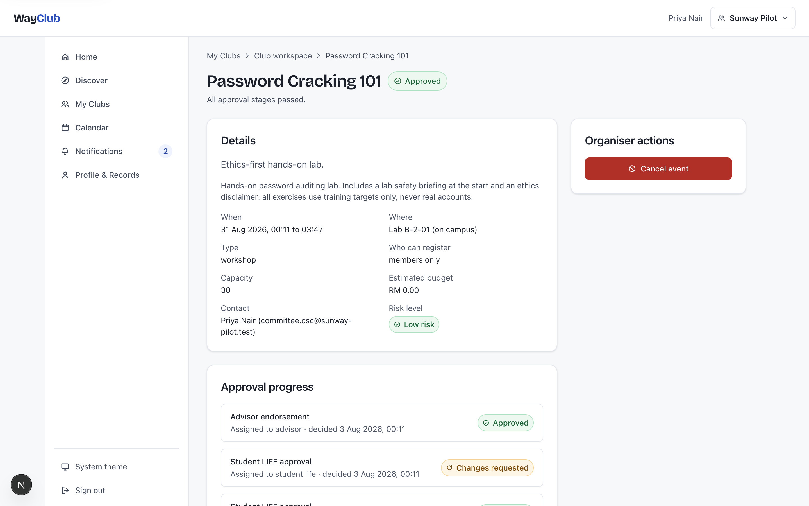
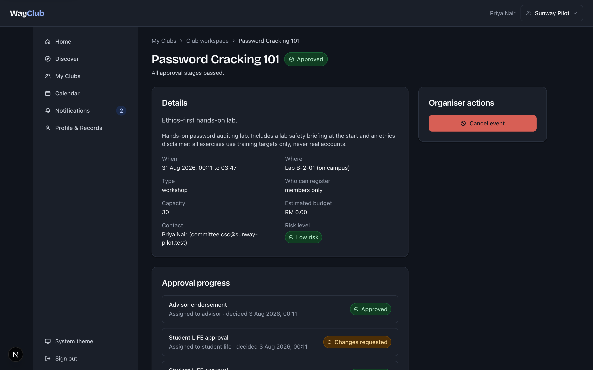
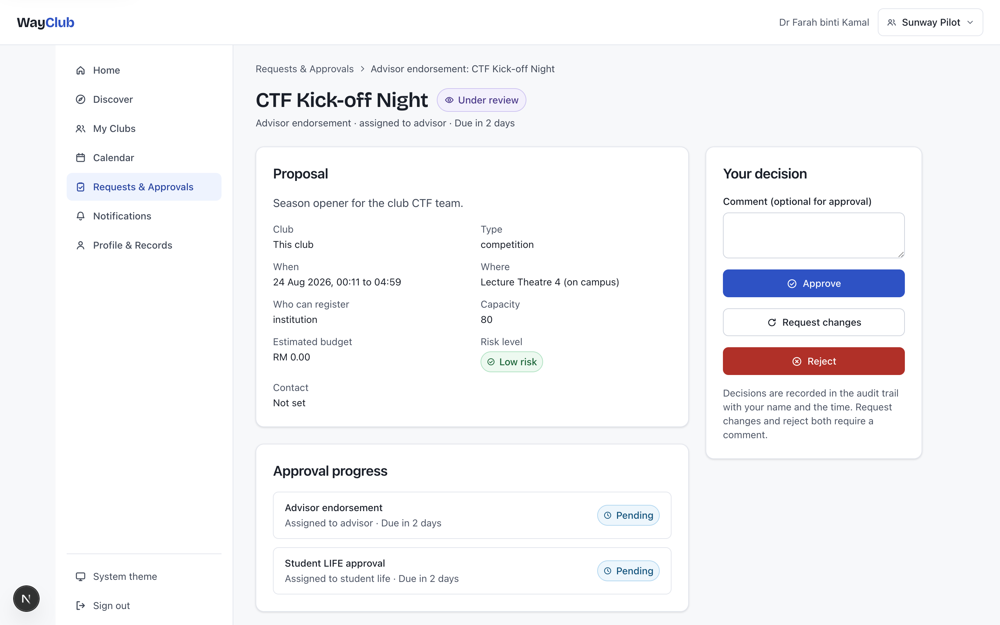
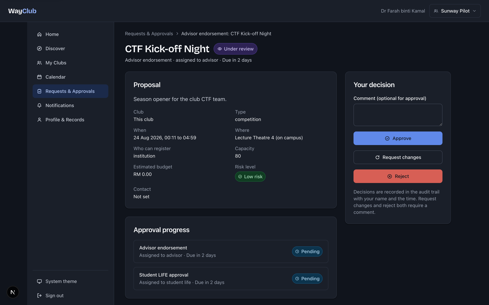
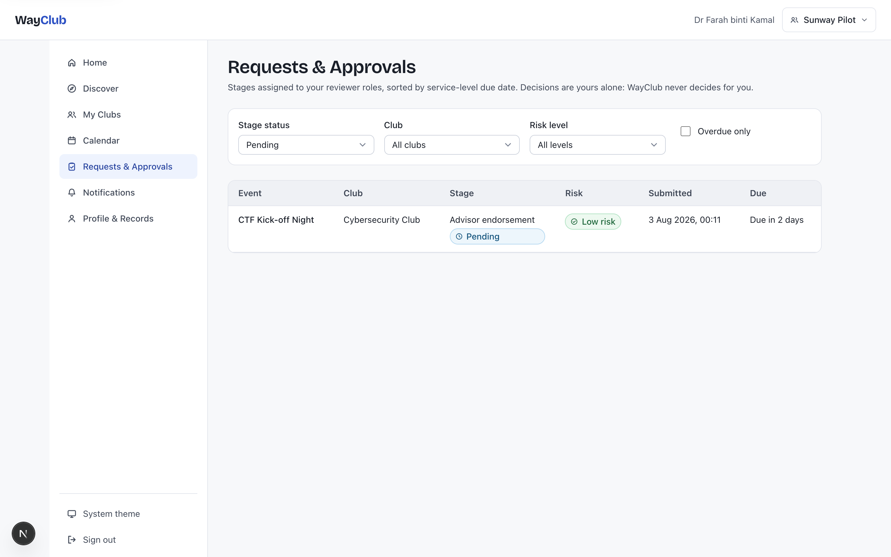
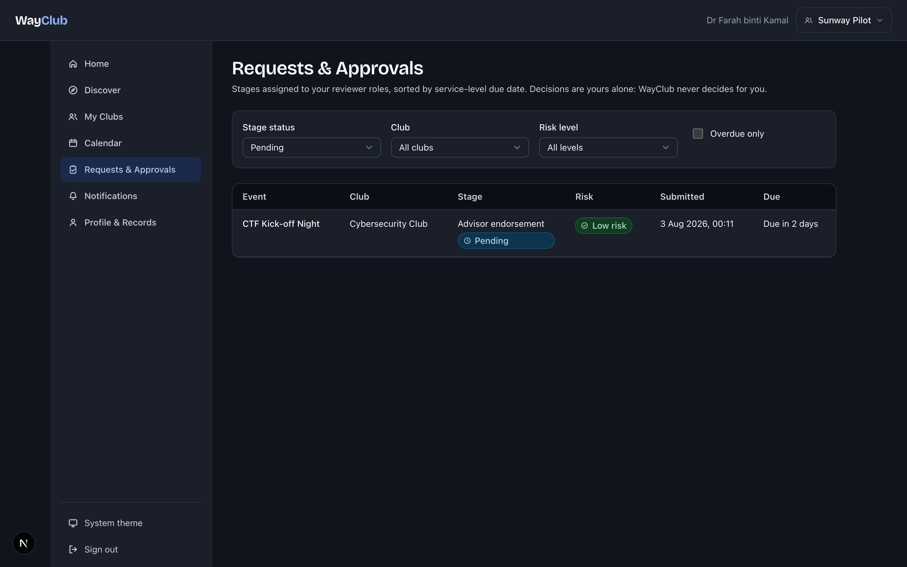
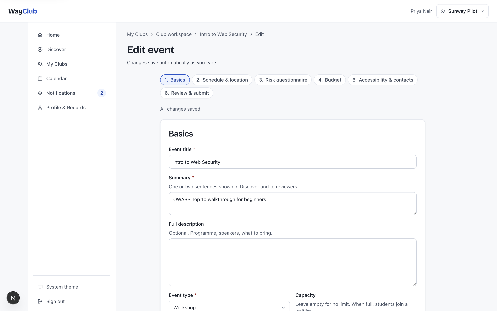
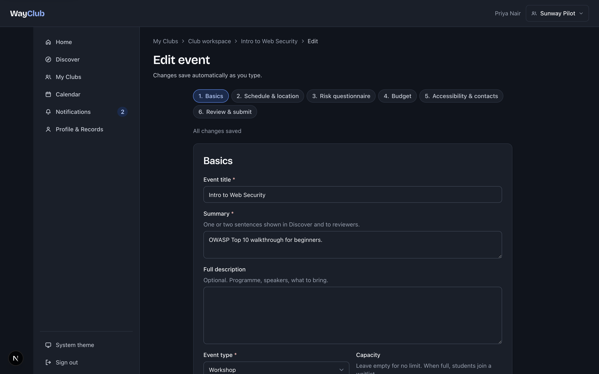
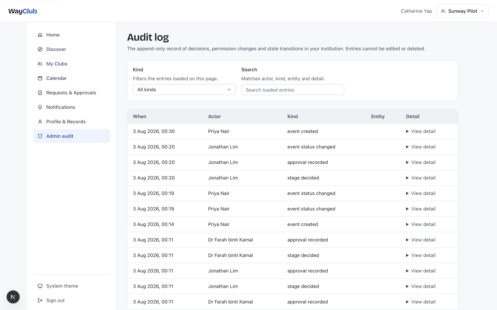
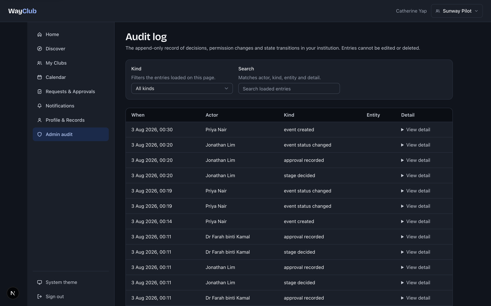
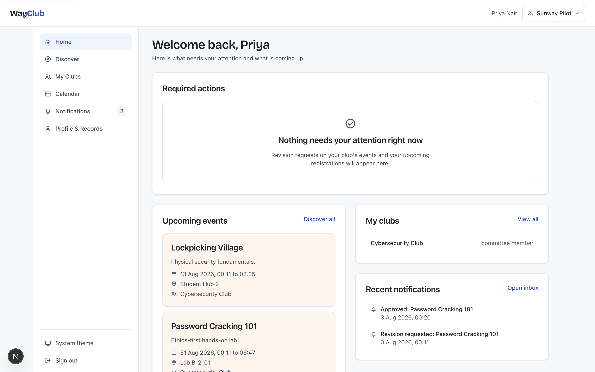
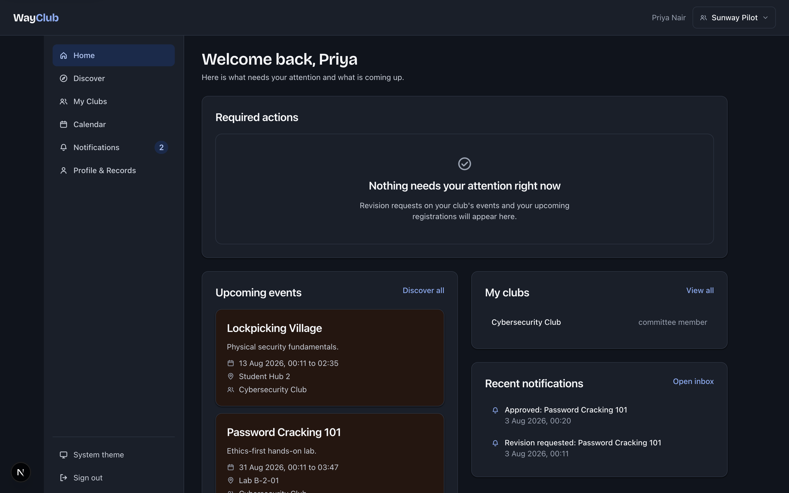
Ten screens exist in the build; six are shown here. The remainder (discover, club workspace, organiser check-in, profile and records) are in the repository under assets/screens/.
Under the hood
The stack
A pnpm monorepo: contract-first REST between a NestJS modular monolith and a Next.js web app, PostgreSQL 17 as the enforcement layer, and a Flutter check-in app planned against the same contract.